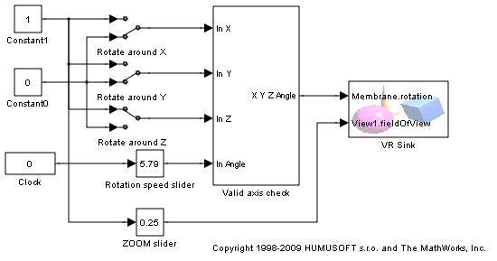
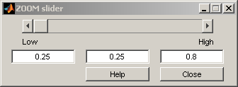
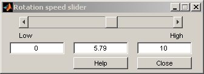
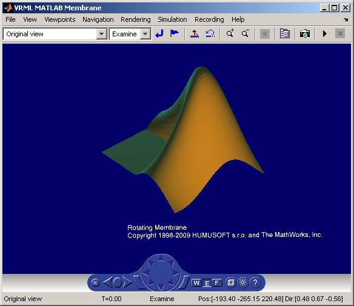
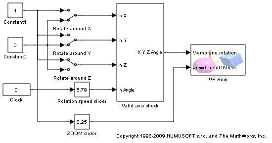
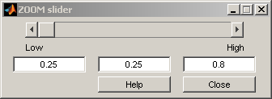
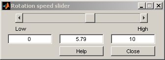
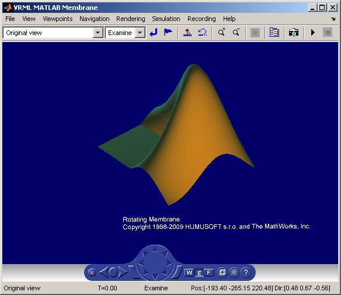

Rotating Membrane
The vrmemb1 example is similar to the vrmemb example, but this time the associated virtual world is driven from a Simulink® model.
   The vrmemb1 example is similar to the vrmemb example, but this time the associated virtual world is driven from a Simulink® model.
   